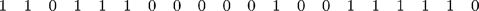
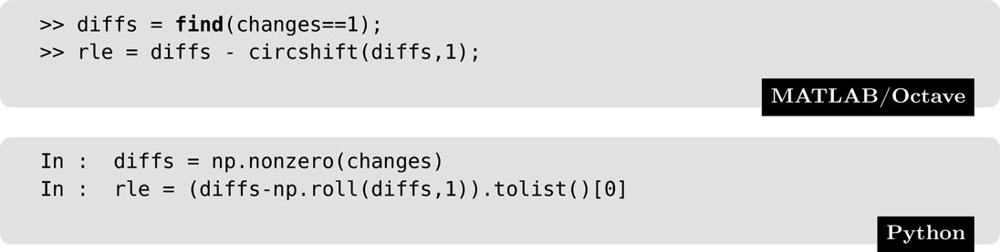
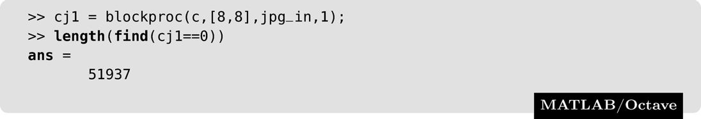
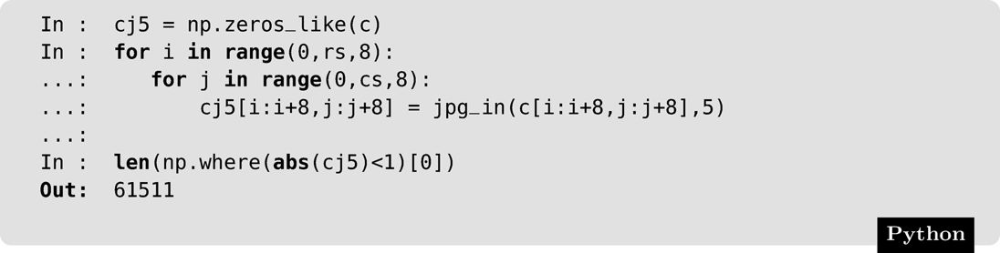
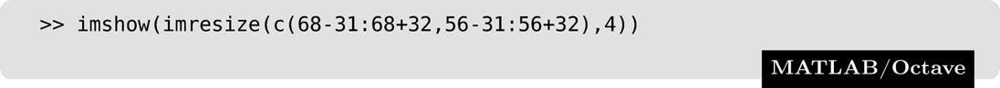
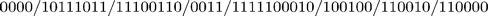
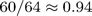

We have seen that image files can be very large. It is thus important for reasons both of storage and file transfer to make these file sizes smaller, if possible. In Section 1.9 we touched briefly on the topic of compression; in this section, we investigate some standard compression methods. It will be necessary to distinguish between two different classes of compression methods: lossless compression, where all the information is retained, and lossy compression where some information is lost.
Lossless compression is preferred for images of legal, scientific, or political significance, where loss of data, even of apparent insignificance, could have considerable consequences. Unfortunately this style tends not to lead to high compression ratios. However, lossless compression is used as part of many standard image formats.
14.2 Huffman Coding
The idea of Huffman coding is simple. Rather than using a fixed length code (8 bits) to represent the gray values in an image, we use a variable length code, with smaller length codes corresponding to more probable gray values.
A small example will make this clear. Suppose we have a 2-bit grayscale image with only four gray levels: 0, 1, 2, 3, with the probabilities 0.2, 0.4, 0.3, and 0.1, respectively. That is, 20% of pixels in the image have gray value 50; 40% have gray value 100, and so on. The following table shows fixed length and variable length codes for this image:
Gray Value
Probability
Fixed Code
Variable Code
0
0.2
00
000
1
0.4
01
1
2
0.3
10
01
3
0.1
11
001
Now consider how this image has been compressed. Each gray value has its own unique identifying code. The average number of bits per pixel can be easily calculated as the expected value (in a probabilistic sense):
Notice that the longest codewords are associated with the lowest probabilities. This average is indeed smaller than 2.
This can be made more precise by the notion of entropy, which is a measure of the amount of information. Specifically, the entropy H of an image is the theoretical minimum number of bits per pixel required to encode the image with no loss of information. It is defined by
where the index i is taken over all grayscales of the image, and pi is the probability of gray level i occurring in the image. Very good accounts of the basics of information theory and entropy are given by Roman [39] and Welsh [55]. In the example given above,
This means that no matter what coding scheme is used, it will never use less than 1.8464 bits per pixel. On this basis, the Huffman coding scheme given above, giving an average number of bits per pixel much closer to this theoretical minimum than 2, provides a very good result.
To obtain the Huffman code for a given image we proceed as follows:
1.Determine the probabilities of each gray value in the image.
2.Form a binary tree by adding probabilities two at a time, always taking the two lowest available values.
3.Now assign 0 and 1 arbitrarily to each branch of the tree from its apex.
4.Read the codes from the top down.
To see how this works, consider the example of a 3-bit grayscale image (so the gray values are 0–7) with the following probabilities:
Gray Value 0 1 2 3 4 5 6 7 Probability 0.19 0.25 0.21 0.16 0.08 0.06 0.03 0.02
For these probabilities, the entropy can be calculated to be 2.6508. We can now combine probabilities two at a time as shown in Figure 14.1.
Figure 14.1: Forming the Huffman code tree
Figure 14.2: Assigning 0's and 1's to the branches
Note that if we have a choice of probabilities we choose arbitrarily. The second stage consists of arbitrarily assigning 0's and 1's to each branch of the tree just obtained. This is shown in Figure 14.2.
To obtain the codes for each gray value, start at the 1 on the top right, and work back toward the gray value in question, listing the numbers passed on the way. This produces:
Gray Value
Huffman Code
0
00
1
10
2
01
3
110
4
1110
5
11110
6
111110
h 7
111111
As above, we can evaluate the average number of bits per pixel as an expected value:
which is a significant improvement over 3 bits per pixel, and very close to the theoretical minimum of 2.6508 given by the entropy.
Huffman codes are uniquely decodable, in that a string can be decoded in only one way. For example, consider the string

to be decoded with the Huffman code generated above. There is no code word 1, or 11, so we may take the first three bits 110 as being the code for gray value 3. Notice also that no other code word begins with this string. For the next few bits, 1110 is a code word; no other begins with this string, and no other smaller string is a codeword. So we can decode this string as gray level 4. Continuing in this way we obtain:
as the decoding for this string.
For more information about Huffman coding, and its limitations and generalizations, see [13, 37].
14.3 Run Length Encoding
Run length encoding (RLE) is based on a simple idea: to encode strings of zeros and ones by the number of repetitions in each string. RLE has become a standard in facsimile transmission. For a binary image, there are many different implementations of RLE; one method is to encode each line separately, starting with the number of 0's. So the following binary image:
would be encoded as
Another method [49] is to encode each row as a list of pairs of numbers; the first number in each pair given the starting position of a run of 1's, and the second number its length. So the above binary image would have the encoding
Grayscale images can be encoded by breaking them up into their bit planes; these were discussed in Chapter 3.
To give a simple example, consider the following 4-bit image and its binary representation:
We may break it into bit planes as shown:
and then each plane can be encoded separately using our chosen implementation of RLE.
However, there is a problem with bit planes, and that is that small changes of gray value may cause significant changes in bits. For example, the change from value 7 to 8 causes the change of all four bits, since we are changing the binary strings 0111 to 1000. The problem is of course exacerbated for 8-bit images. For RLE to be effective, we should hope that long runs of very similar gray values would result in very good compression rates for the code. But this may not be the case. A 4-bit image consisting of randomly distributed 7's and 8's would thus result in uncorrelated bit planes, and little effective compression.
To overcome this difficulty, we may encode the gray values with their binary Gray codes. A Gray code is an ordering of all binary strings of a given length so that there is only one bit change between a string and the next. So, a 4-bit Gray code is:
See [37] for discussion and detail. To see the advantages, consider the following 4-bit image with its binary and Gray code encodings:
where the first binary array is the standard binary encoding, and the second array the Gray codes. The binary bit planes are:
and the bit planes corresponding to the Gray codes are:
Notice that the Gray code planes are highly correlated except for one bit plane, whereas all the binary bit planes are uncorrelated.
Implementing Run Length Coding
We can experiment with run length encoding by writing a simple function to implement it. We shall assume our data is binary, and in one single column. The first step is to find the places at which the data changes values, starting with the value 1, indicating that the first value is indeed different from the previous (non-existent!) value. We also need to append a 1 at the end, so that we can find the length of the final run. This can be done very easily by comparing the data with a shifted version of itself:
In Python:
Now the run-length code is simply the difference between the indices of the ones:

The only problem here is the first element, which should be changed to zero if the initial value of data is 1, and removed if the first element of data is zero:
For example, if data was the list
then the value of changes would consist of
giving the values of diffs as
and the initial rle as
Since the first value of data is 1, then the first value −9 is changed to 0 giving the run-length code
If we experiment with a binary image, for example circles2.png then:
Repeating the above commands for this new data, and producing a new rle, then by using whos rle it can be found that rle consists of 1207 values of type double, taking up 9656 bytes of storage. If we change the data type to uint16 the number of bytes decreases to 2414:
(Note that the outputs for MATLAB and Octave from whos are slightly different). In this case, RLE provides a remarkable compression rate.
In Python:
Again the above commands can be applied, to produce rle.
14.4 Dictionary Coding: LZW Compression
The principle idea behind all dictionary compression schemes (of which there are a great many) is that there is a dictionary of symbols and of groups of symbols. As the algorithm works its way through the input data, when it encounters a group of symbols not in the dictionary, it adds that group—with an appropriate code—to the dictionary. This means that when that group of symbols is encountered again, there is a dictionary entry for it.
The initial scheme was published in 1978 by Abraham Lempel and Jacob Ziv (and is known as LZ78); the LZW scheme is a variant devised by Terry Welch in 1984. It has been a hugely popular scheme because of its simplicity. It achieved some notoriety by being used in the GIF image format; the algorithm was thus patented to the Unisys Corporation, who attempted to enforce its licensing. The commercial aspect of the GIF format and its algorithms was one of the main drivers behind the development of a patent-free alternative: the result was the PNG format. The patent however expired in 2003, and the algorithm can now be used freely and without restriction.
The LZW algorithm is best explained by an example. To keep matters as simple as possible, data will consist only of capital letters, and so the test phrase “A banana bandanna ban” will appear as “ABANANABANDANNABAN”. The initial dictionary consists of the 26 letters of the alphabet, and their codes 0 to 25:
The algorithm keeps current letters from the data in a buffer, which is initially empty. At each step, the next letter from the data is added to the buffer. When a group of letters is reached that is not in the dictionary, then the buffer except for the most recent addition is added to the dictionary with the next unused code value, and the buffer is changed to hold only the last letter.
For example, suppose we collect these letters one by one into the buffer:
Suppose that the first three groups of letters A, AN, ANN were already in the dictionary, but the last group ANNA was not. Then the output would be the code for ANN, and the buffer would be emptied except for the last letter A.
The uncompressed text, as codes is:
Here is the algorithm applied to the test text:
A DA no DA = 33 03 Output the code for D, reduce the buffer to A N AN yes Do nothing at this stage N ANN no ANN = 34 28 Output the code for AN, reduce the buffer to N A A yes Do nothing at this stage B NAB no NAB = 35 29 Output the code for NA, reduce the buffer to B A BA yes Do nothing at this stage N BAN no BAN = 36 27 Output the code for BA, reduce the buffer to N # N# no 12 End of data reached, so stop
The compressed output, as code, would be
So the algorithm has reduced 18 code values to just 11. Clearly this example is highly contrived to have good results for a small input; but, in fact, for large data we could expect in most cases to achieve a reasonable compression rate.
One of the many elegant aspects of LZW compression is that it is self-uncompressing: given the initial dictionary, the compressed output contains all the information needed to build up the dictionary. That is, there is no need to include the extra dictionary values with the code. Basically, we do exactly the same as for compression: add the current letter to the buffer, check whether it's in the dictionary. Sometimes the output code might involve several symbols, so we treat each one separately:
Code Data Buffer In dict? New dict and code Comments 00 A A yes 01 B AB no AB = 26 Reduce buffer to B 00 A BA no BA = 27 Reduce buffer to A 12 N AN no AN = 28 Reduce buffer to N 28 A NA no NA = 29 Reduce buffer to A N AN yes 26 A ANA no ANA = 30 Reduce buffer to A B AB yes 28 A ABA no ABA = 31 Reduce buffer to A N AN yes 03 D AND no AND = 32 Reduce buffer to D 28 A DA no DA = 33 Reduce buffer to A N AN yes 29 N ANN no ANN = 34 Reduce buffer to N A NA yes 27 B NAB no NAB = 35 Reduce buffer to B A BA yes 12 N Last code value so stop
The original uncompressed data can be seen in the second column.
Programs for LZW compression are given at the end of the chapter. For example, suppose the programs are applied to the resized version of the cameraman image:
To compare the total number of bits in the image and the LZW code, note that the number of bits required for an integer n is given by
This is the ceiling (next integer above) of the logarithm of n to base 2. So, the total number of bits required for all the code values can be computed as:
Then we can calculate the total number of bits of all the pixels in c, first with 8 bits per pixel, and next with the number of bits per integer value:
In Python, the values are slightly different, owing to the differences in the resizing algorithm and the conversion to data type uint8:
Total bits in the image:
There is clearly some compression.
The version of LZW discussed here is the simplest version; there are variants that are faster or with more optimal compression rates. For more detail, the texts by Salomon [41, 42] or by Sayood [43] are excellent references and introductions not only to LZW but also to other compression algorithms.
14.5 The JPEG Algorithm
Lossy compression trades some acceptable data loss for greater rates of compression. Of the many compression methods available, the algorithm developed by the Joint Photographic Experts Group (JPEG) has become one of the most popular. It uses transform coding, where the coding is done not on the pixel values themselves, but on a transform.
The heart of this algorithm is the discrete cosine transform (DCT), which is defined similarly to the Fourier transform. Although it can be applied to an array of any size, in the JPEG algorithm it is applied only to 8 × 8 blocks. If f(j, k) is one such block, then the forward (two-dimensional) DCT is defined as:
and the corresponding inverse DCT as
where C(w) is defined as
The DCT has a number of properties that make it particularly suitable for compression:
1.It is real-valued, so there is no need to manipulate complex numbers
2.It has a high information packing ability, in that it packs large amounts of information into a small number of coefficients
3.It can be implemented very efficiently in hardware
4.Like the FFT, there is a “fast” version of the transform which maximizes efficiency
5.The basis values are independent of the data [13]
Like the 2-dimensional FFT, the 2-dimensional DCT (given above), is separable, and so can be calculated by a sequence of 1-dimensional DCTs; first we apply the 1-D DCT to the rows, then the 1-D DCT to the columns of the result.
To see an example of the information packing capabilities, we consider the simple linear sequence given by
We shall apply both the FFT and DCT to this sequence, remove half the result, and invert the remainder. First the FFT:
Now the DCT (using the dct and idct functions):
In Python, this can be handled by first importing a DCT function:
Python's default is not to perform automatically scaling with the DCT, so we need to include the parameter norm='ortho' to ensure that the appropriate scaling takes place.
Notice how much closer the DCT result is to the original, in spite of the loss of information from the transform. This example is illustrated in Figure 14.3.
Figure 14.3: Comparison of the FFT and the DCT
The JPEG baseline compression scheme is applied as follows:
1.The image is divided up into 8 × 8 blocks; each block is transformed and compressed separately.
2.For a given block, the values are “shifted” by subtracting 128 each value.
3.The DCT is applied to this shifted block.
4.The DCT values are “normalized” by dividing through by a “normalization matrix” Q.
It is this normalization that provides the compression, by making most of the elements of the block zero.
5.This matrix is formed into a vector by reading off all non-zero values from the top left in a zig-zag fashion as shown in Figure 14.4.
6.The first coefficients of each vector, which will be the largest elements in each vector, and which are known as the DC coefficients, are encoded by listing the difference between each value and the values from the previous block. This helps keep all values (except for the first) small.
7.These are then compressed using run length encoding.
8.All other values (known as the AC coefficients) are compressed using a Huffman coding.
The amount of lossy compression can be changed by scaling the normalization matrix Q in Step 4 above.
To decompress, the above steps are applied in reverse; the Huffman encoding and run length encoding can be decoded with no loss of information. Having done that, then:
Figure 14.4: Reading the elements from a DCT block
1.The vector is read back into an 8 × 8 matrix.
2.The matrix is multiplied by the normalization matrix.
3.The inverse DCT is applied to the result.
4.The result is shifted back by 128 to obtain the original image block.
The normalization matrix, which has been used by the JPEG group, is
We can experiment with the DCT and quantization using standard functions, and with an 8 × 8 block from an image. First, define the block and subtract 128 from it:
The block of values thus produced is
Now we apply the DCT, and divide by the normalization matrix:
Note that Python does not have a dct2 function, but it is easy to write one, using the separability of the transform:
The value of this final array is
At this stage we have turned our block from above into a block containing mostly zeros. If we were to output a vector from this block, it would be:
where EOB signifies the end of the block. So, by this stage we have reduced an 8 × 8 block to a vector of length 21, containing only small values.
To uncompress, we take the vector and reorder its elements into the matrix bq above. The steps to recover the block are first multiplying by the normalization matrix, applying the inverse DCT, and finally adding 128:
In Python, as before, we have to provide a function for the inverse DCT:
The value of block2 is:
It can be seen that these values are very close, if not quite exactly the same, as the values in the original block. The differences between original and reconstructed values are:
The algorithm works best on regions of low frequency; in such cases, the original block can be reconstructed with only very small errors.
We can experiment with JPEG compression by experimenting with scaling the normalization matrix. In MATLAB or Octave, we can create anonymous functions:
and in Python we can create ordinary functions:
The functions in MATLAB/Octave can be applied to an image with the blockproc function. Recall that this applies a function to each block in the image; the size of the blocks being given as parameters to blockproc.
Applied to the matrix of the caribou image:

Python does not have a blockproc equivalent, but in fact we can use Python's programming facility to do the job just as well:
So we have applied the compression scheme to each 8 × 8 block of the image, up to the point of dividing by the quantization matrix and round off. The point of the second command is to show how much information has been lost at this stage. The original image contained 65,536 different items of information (the pixel values); each one between 0 and 128. But now we have only 65,536 − 51,940 = 13,596 items of information, and their maxima and minima are:
and in Python:
So, the information is not only far less in number, but also in range. Now we can go backward:
or
The original image and result c2 are shown in Figure 14.5. There is no apparent difference between the images—they look identical. However, they are not identical:
Figure 14.5: An image before and after JPEG compression and decompression
or
and we can see the difference (scaled for viewing):
or in Python with
This difference is shown in Figure 14.6. We can experiment with different levels of quantization. Suppose we take our extra parameter n to be 2. This has the effect of doubling each value in the normalization matrix, so we should set more of the DCT values to zero:
Figure 14.6: The difference between an image and its JPEG decompression
This means that only 8807 values are non-zero. We can also find that the maximum and minimum values of cj are 30 and −22. We can now decompress, and display the result and the difference with the same commands as above. The results are shown in Figure 14.7. Now we shall try a scale of 5:
Figure 14.7: JPEG compression with a scale factor of 2

and the result and difference image are shown in Figure 14.8. At this stage we may be losing some fine detail, but the image is still remarkably good. We also note that as the scale factor increases, the range of values after the quantization decreases. For the matrix cj above, the maximum and minimum are 12 and −9.
Figure 14.8: JPEG compression with a scale factor of 5
Finally, with a scale factor of 10, the maximum and minimum are 6 and −4, and we have only 1852 items of information. The results are shown in Figure 14.9. This image certainly shows considerable degradation; however, the animal is still quite clear.
Figure 14.9: JPEG compression with a scale factor of 10
We can see the results of JPEG compression and decompression by looking at a closeup of the image; we shall investigate that portion of the animal around the top of the head:

which is shown in Figure 14.10. The same areas, with the scales of 1 and 2, are shown in Figure 14.11. And the closeups, with the scales of 5 and 10, are shown in Figure 14.12. Notice that “blockiness” becomes more apparent as the scale factor increases. This is due to the working of the algorithm; that each 8 × 8 block is processed independently of the others. This tends to produce discontinuities in the output, and is one of the disadvantages of the JPEG algorithm for high levels of compression.
Figure 14.10: An image closeup
Figure 14.11: Closeups after the scale factors of 1 and 2
In Chapter 15, we shall see that some of these disadvantages can be overcome by using wavelets for compression.
We have seen how changing the compression rate may affect the output. But the JPEG algorithm is particularly designed for storage. For example, suppose we take the original block from the caribou image, but divide it by double the quantization matrix. After reordering, the output vector will be
This vector is further encoded using Huffman coding. To do this, each element of the vector (except for the first), that is, each AC value, is defined to be in a particular category depending on its absolute value. In general, the value 0 is given category 0, and category kcontains all elements x whose absolute value satisfies
Figure 14.12: Closeups after the scale factors of 5 and 10
The categories are also used for the differences of the first (DC) value. The first few categories are:
Range
DC Category
AC Category
0
0
Not applicable
−1, 1
1
1
−3, −2, 2, 3
2
2
−7, …, −4, 4, …, 7
3
3
−15, …, −8, 8, …, 15
4
4
To encode the vector, the category is used with all non-zero terms, along with the number of preceding zeros. For example, for the vector above:
For each non-zero AC value then, a binary vector is produced containing the Huffman code for its particular category and run of preceding zeros, followed by a sign bit (0 for negative, 1 for positive), and then for category k a run of k − 1 bits indicating the position within that category. The Huffman code table is provided as part of the JPEG baseline standard; for the first few categories and runs, they are:
Run
Category
Code
0
0
1010
0
1
00
0
2
01
0
3
100
0
4
1011
1
1
1100
1
2
111001
1
3
1111001
1
4
111110110
2
1
11011
2
2
11111000
2
3
1111110111
A full table is given by Gonzalez and Woods [13]. For the non-zero AC values in the above vector, the output binary strings will be created from:
The output string of bits for this block will consist of the code for the difference of the DC coefficient, followed by:

where the lines just show the individual strings. Assuming 8 bits for the first code, the entire block has been encoded with only 60 bits,

bit per pixel: a compression rate of over 8.5.
For a detailed account of the JPEG algorithm, see Pennebaker [56].
14.6 Programs
Start with some programs in MATLAB/Octave for LZW compression of uppercase text:
and for decompression of the resulting code:
Finally, the LZW program slightly adjusted to manage images of type unit8. Note that this program does no error checking, so that if the image is not of type unit8 the program will produce rubbish.
For Python, here is the program file which contains all three functions: compression of uppercase text and of images, and decompressing to text.
Exercises
1.Construct a Huffman code for each of the probability tables given:
In each case, determine the average bits/pixel given by your code.
2.From your results of the previous question, what do you think are the conditions of the probability distribution which give rise to a high compression rate using Huffman coding?
3.Download a Huffman code program (or write one of your own), and test it on the examples given.
Then try it on different images. What sort of compression rates do you obtain? What sorts of images seem to have the best compression rates?
4.Encode each of the following binary images using run length encoding:
(a)
(b)
5.Using run length encoding, encode each of the following 4-bit images:
(a)
(b)
6.Check your answers to the previous two questions with the techniques discussed in this chapter. You can isolate the bit planes by using the technique discussed in Section 3.3.
7.Encode the preceding images using the 4-bit Gray code, and apply run length encoding to the bit planes of the result.
Compare the results obtained using Gray codes, and standard binary codes.
8.Write a function for restoring a binary image from a run length code. Test it on the images and codes from the previous questions.
9.The following are the run-length encodings for a 4 × 4 4-bit image from most to least important bit-planes:
Construct the image.
10.
(a)Given the following 4-bit image:
transform it to a 3-bit image by removing the least most significant bit plane. Construct a Huffman code on the result and determine the average number of bits/pixel used by the code.
(b)Now apply Huffman coding to the original image and determine the average number of bits/pixel used by the code.
(c)Which of the two codes gives the best rate of compression?
11.By hand, apply LZW encoding to the phrases
(a)HOWNOWBROWNCOW
(b)REALLYREALCEREALDEAL
and decode the results.
12.Experiment with LZW coding of images. Which image has the best compression rate and which image has the worst?
13.Write a program to perform LZW uncompression of an image code, and apply it to the codes from the previous question.
14.Apply JPEG compression to an 8 × 8 block consisting of (a) all the same value, (b) the left half one value, and the right half another, (c) random values uniformly distributed in the 0–255 range.
Compare the length of the code vector in each case, and the results of decompression.
15.Open the image engineer.png.
Using the JPEG compression commands described above, attempt to compress this image using greater and greater compression rates. What is the largest quantization scale factor for which the image is still recognizable? How many zeros are in the DCT block matrix?
16.Apply the given JPEG Huffman codes to the vector: